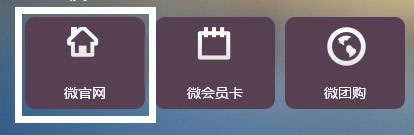
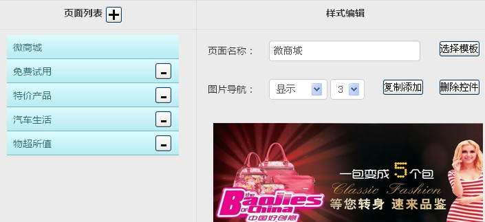
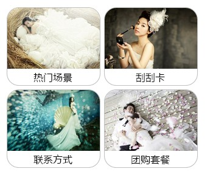
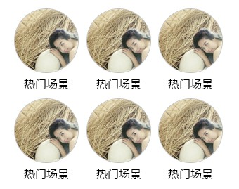
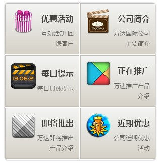
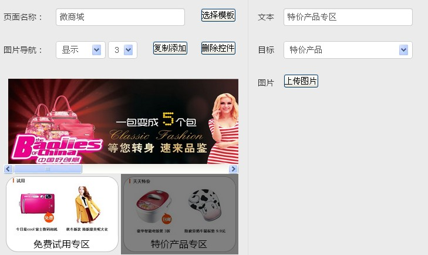
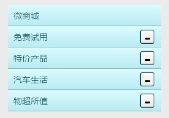

一、首先选择微官网。如图：
二、进入样式编辑，为网站首页设计一个名称，添加左侧的子页面，同时设置图片导航显示，并选择导航图片的数量， 如图：
点击选择模板，可以选择您喜欢的样式模板,我们为您准备了几十种模板供参考：
   当然模板还不止这些，更多更好的模板等您试用。三、选择好模板后，您可以设置此模板内的组件个数，点击每个组件，右侧即可设置其对应的图片、文字说明和跳转页面，如图：
四、微官网首页设置好后，您还需继续设置页面列表中的子页面内容：
五、 按照此方法，即可生成属于自己的微官网：
六、 最后，您设置好的每一步别忘了点击保存哦！